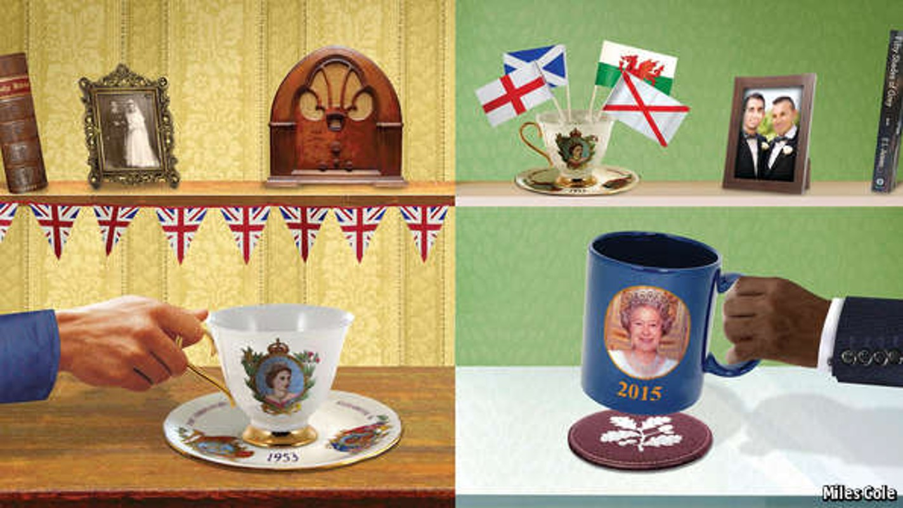
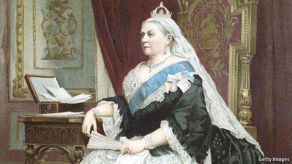
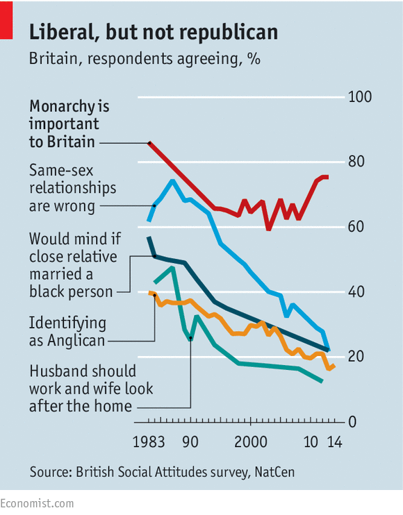
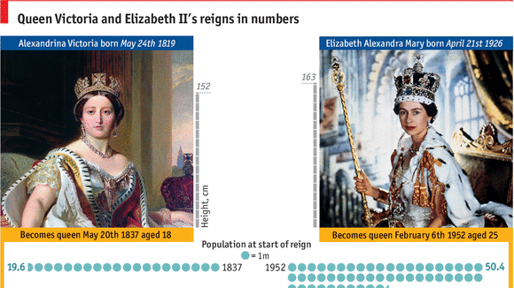
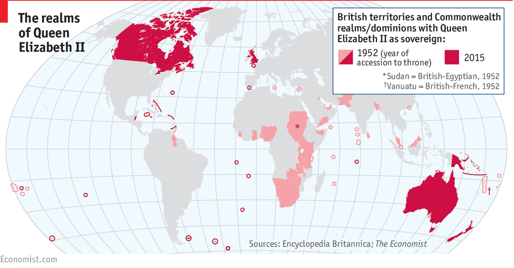
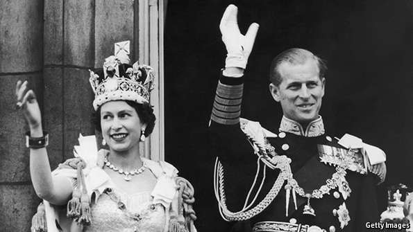
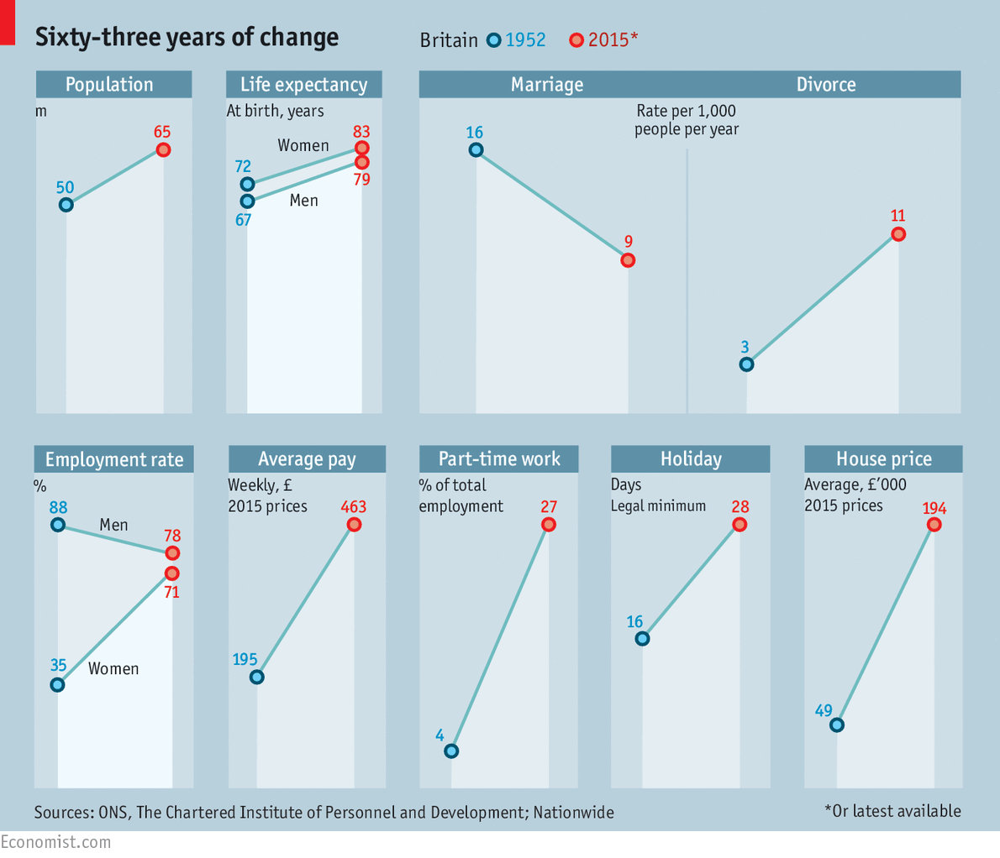
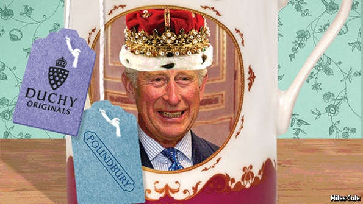

Queen Elizabeth II's reign has seen the United Kingdom become a diverse, fragmented one

ON THE occasion of Queen Elizabeth II’s coronation on June 2nd 1953, a year and four months after she had become queen on the death of her father, 82 towns and villages in Britain roasted an ox—the Ministry of Food having loosened post-war food rationing rules only for places that could show they had a tradition of doing so on such occasions. Others gathered at street parties, crowded around new television sets in homes smelling of Bakelite and tobacco and strung bunting from buildings black with soot.
On September 9th 2015 Queen Elizabeth II’s reign reached its 23,226th day, surpassing the record set by Queen Victoria. It is a landmark being passed over without much official fanfare—there is little dignity in celebrating knocking one’s great-great grandmother into second place. Nevertheless, it provides an occasion for Britain to think about its queen and itself, as the end of the second Elizabethan age draws near.
Four hallmarks of the era stand out: the transformation of Britain from the industrial hub of a global empire into a cultural power and entrepôt; its development into an ethnic melting pot; the relaxing of interpersonal relations and moral codes; and the loosening of the United Kingdom itself. These connected trends have all, on the whole, been good for the queen’s subjects, who are wealthier, longer lived and freer than they were. That said, some are in a sorry state: though many places, most notably London, have thrived in post-industrial, post-imperial Britain, others are depressed. Today 16% of households have no member in work, up from 4% 63 years ago.
From shore to shore
During her reign the queen has travelled near-ceaselessly around Britain and beyond; Robert Hardman, a biographer, estimates that she has met 4m people. To revisit her early destinations illustrates the changes six decades have brought.
The queen went to Stoke-on-Trent in November 1955. The copious commemorative plates and teapots made in the city’s potteries two years earlier to mark her coronation had heralded the end of wartime restrictions on the production of painted and coloured wares. On a freezing, windy day (so cold that several boys at a football match she watched collapsed on the pitch) the monarch toured the Wedgwood factory, where mass production still meant men engraving patterns with scalpels and spatulas, their forearms caked in wet clay, and women painting the rims and handles of recently fired teapots by hand.

Our coverage of Queen Victoria's death, from 1901
The city was a product of the British Empire. It was here that porcelain-making techniques from China, imported by the East India Company, had been adapted by the likes of Josiah Wedgwood in the 18th century. The city had then taken advantage of the protected markets opened up by the Company. As Tristram Hunt, a historian and local MP, notes: “It was from the kilns and pot banks of Stoke-on-Trent that the forts, bungalows and government houses of the Empire were supplied with ceramics.” Stoke still bears the traces of that period: ornate schoolhouses, a fine brick market-hall and, suburban enough to be out of smelling distance of the black sludge that filled the waterways, villas of industrialists made rich by laying the Raj’s dinner table.
The Empire was in already in decline—India had gained its independence in 1947—but its reach persisted: 46 now-sovereign nations (including Malaysia, Nigeria and Qatar) were ultimately governed from Whitehall, whose ministerial buildings retain the grandeur of an imperial capital. British schoolboys could buy an “Empire Youth Annual” of tales of derring-do; the country celebrated an annual Empire Day; students at Oxford University took courses designed to prepare them for careers as colonial administrators. The Victorian age still loomed over Elizabeth’s Britain: Victoria had reigned for longer than the four intervening monarchs put together.

The Duchess of Cambridge (Kate Middleton, wife of Prince William) visited Stoke this year. The city that greeted her is not the confident, prosperous place it was in 1955. In 1997 the Duke of Edinburgh, the queen’s consort, pronounced it “ghastly”. Without access to sheltered imperial markets, and outbid by cheaper Asian rivals, Stoke has struggled. In 2009 Wedgwood went into administration. Whereas the city enjoyed full employment in the 1950s, the unemployment rate after the 2009 crisis topped 10%. A quarter of premises on the now-shabby high street are vacant.
Other former centres of manufacturing tell a similar story. The global shocks of the 1970s, followed by the domestic ones of Margaret Thatcher’s premiership in the 1980s, made this central third of the queen’s reign the most economically transformative. It was the point at which the cradle of the Industrial Revolution stopped mass-producing things and concentrated on selling services instead.

IN GRAPHICS: The record reign of Queen Elizabeth II
Big cities, with their clusters of firms doing what the country does best (banking, business services, retailing and creative work), are booming: in Leeds and Manchester former mills and factories are now smart offices, flats and shopping centres. In smaller post-industrial settlements, especially those with poor connections, old factory-workers’ houses sell for a symbolic £1 and social problems—poor health, illiteracy and underemployment—are concentrated. The result is a richer but more unequal Britain, with pockets of deprivation that are among western Europe’s most severe.
The wide world over
Yet in recent years Stoke has experienced a modest revival, one that points to the role into which Britain seems to be settling. The designs and wares of the Potteries have found favour in Asia, especially among Chinese and South Koreans, busloads of whom arrive every week for factory tours and shopping trips. Wedgwood—now revived and turning a profit—will soon have 56 shops in China. Stoke has even acquired a Chinese name: Wan Bo Tao Ci (“diverse and plentiful ceramics”). These links are luring more than just tourists; last year a delegation from Chongqing and Dalian visited to spot investment opportunities.
Stoke thus represents Britain’s evolution during the queen’s reign from a trade-based empire, with all the pomp and gunships that implies, to a trading post where foreigners come to invest and do business with other foreigners. British pottery sits on the sideboards of Kuwaitis and Beijingers just as British programmes play on their television screens and British universities welcome their sons and daughters. The country may be diminished but, as Stoke shows, it is managing to pay its way as a sort of factotum to the wealthy from around the world: entertaining them, educating their children, looking after their money and firing their imaginations—as well as their decorative porcelain.

If Britain enjoys such a role, it is at least in part thanks to the far-flung origins of so many of its people. Footage of the queen’s visit to the Corah hosiery factory in Leicester in 1958 will strike any Briton today as utterly alien: all the women at the banks of sewing machines are white. In that same year the recent arrival of modest numbers of West Indian immigrants in nearby Nottingham brought 4,000 people out onto the streets, supposedly angered about a black man flirting with a white woman in a pub. Unable to find many black people, they ended up brawling with each other.
Today Corah is mostly derelict, part of it charred and roofless after a fire in 2012. Its main yard is graffitied and broken-windowed. Outside, however, the city’s present is more cheering. Cafés and restaurants offering shisha and kothu roti do a roaring trade. Worshippers pour out of the Salahuddin mosque. Over the doors of terraced houses and around the neck of a statue of Gandhi hang Hindu garlands. At Milan Enterprises an elderly Indian man explains that, though lots of people worked for Leicester’s textiles industry when they first moved in, his shop’s saris are all imported from the subcontinent.

Our coverage of Elizabeth's accession, from 1952
Britain today is increasingly ethnically diverse—unrecognisably so, to a time-traveller from the 1950s, when according to one study half of Britons had never met a black person. Like other cities, Leicester received a trickle of immigrants from Britain’s former colonies in the 1950s and 1960s. They were followed by 10,000 Asians expelled from Uganda by Idi Amin in 1972—despite the city’s advertisements in the Ugandan Argus newspaper insisting that it was, in fact, pretty lousy. Today Leicester is Britain’s first big settlement with a non-white majority. The queen visited her first Sikh temple there in 2002 and came back in 2012 to launch her diamond-jubilee tour with a spectacle featuring Sikh dhol drummers and a Hindu Holi festival dance.
Leicester is increasingly normal in a country that, in contrast to its sluggish response to today’s crisis in the Mediterranean, has taken in several waves of migrants during Elizabeth’s reign. In 1951 Britain had 74,500 non-white residents; today the figure is 8m, and rising. Philip Rees, a geographer at Leeds University, reckons that by 2051 about half of the country’s local-authority areas will be as diverse as places like Leicester and London are now.
The choicest gifts in store
The growing cultural diversity of Britain is part of a bigger story of social change. At the Ideal Home Exhibition of 1957, the queen was shown pyramids of food tins and rows of fridges by a delegation of middle-aged men who, one suspects, had little experience of operating either (the most exotic showpiece was a gadget that could fashion a potato into the shape of a corkscrew). She returned to the annual exhibition in 2015, when the inventions on show included a “smart home” tailored in every conceivable respect to the owner’s tastes.

Britain as a whole has shed the formalities of the 1950s for an individualism that is exemplified by the royal family itself. When the queen took the throne, she had recently claimed in a speech that “divorce and separation are responsible for some of the darkest evils in our society today”. In 1955 her sister, under pressure from politicians and courtiers, reluctantly turned down a marriage proposal from a divorced man. Plays were censored and a man invited to a royal garden party could bring a companion only if he was married to her.
The change, which began in the 1960s, was illustrated by Roy Jenkins as home secretary (a post that required him to join the queen on her boat in the Scottish lochs, should London succumb to a nuclear attack). In his 23 months in the job, Jenkins enacted reforms that both responded to and anticipated the defining social trends of the age: legalising homosexuality and abortion, legislating for “no fault” divorce, banning racial discrimination and abolishing censorship in the theatre, all in the name of the “civilised society”.
Governments have since extended his changes. Britons, meanwhile, have ditched the grand old cultural and moral monoliths to which they deferred willingly in the 1950s, drifting away from religion, political parties and organised labour, for example. At the rate of the past three decades the National Trust, an outfit that looks after old buildings and land, will have more members than the entire British union movement by the mid-2020s. Marriage, too, is not the totem it was: 5.6% of children were born out of wedlock in 1950; next year the rate is expected to exceed 50%.
One sign of Britons’ new informality was the clamour for the royal family to emote in response to the death in 1997 of Princess Diana. Unlike the queen, Tony Blair, then the prime minister, captured the mood; a settlement with a less stuffy electorate lay at the heart of the New Labour formula that had recently propelled him to power. In other ways, the royal family has caught up with the country’s changes. Guests at royal garden parties can now bring any partner they like. The queen has four children and three of them have committed the very act—divorce—that she disparaged before her coronation.
And form one family
The geography of British politics and society has changed along with its tone. When the queen visited Edinburgh in 1953 it was, in many ways, just another British city. It had a regional accent, local habits and identities, but like the rest of the country had voted for a mix of Conservative and Labour MPs at the 1951 election, had a manufacturing-heavy economy and was proudly unionist. The policies of the post-war Labour government—nationalisation, house-building, the National Health Service—had been implemented there just as they had in England. As she processed up Princes Street, crowds five deep cheered, waving handkerchiefs and union flags.
If the politics of Scotland and the rest of the United Kingdom have diverged in the intervening time, this is partly thanks to different economic experiences. The growth of the North Sea oil industry in the 1970s, the deindustrialisation of places like Glasgow that accelerated under Thatcher and the decision to test a regressive “poll tax” in Scotland all powered the rise of the pro-devolution (now pro-independence) Scottish National Party (SNP). To this day posters claiming “It’s Scotland’s oil” and depicting Thatcher as a vampire, the black stuff dripping from her fangs, line the shelves of its Edinburgh headquarters. In 1999 the Labour government in Westminster devolved swathes of domestic policy to a new Scottish Parliament at Holyrood in recognition of the growing sense of separateness north of the border.

Far from curbing secessionism, this new body created a platform for the SNP, which in 2011 won the majority needed to hold last year’s independence referendum. Scots voted against separation, but the pro-independence movement has since stormed ahead. Some polls suggest it would now win a plebiscite. Today at public events the Saltire is waved along with the Union flag, the flying of which is now a political act, rather than the uncomplicatedly patriotic one it was when the new queen visited Edinburgh in 1953. On several occasions in the run-up to the referendum, pro-independence campaigners burned it; in February this year a man in Falkirk was asked to leave a bar on the grounds that the Union Jack on his shirt was “offensive” to other drinkers.
Thus Edinburgh, where the queen spent September 9th, the day on which her reign overtook that of Queen Victoria, feels separate in a way hard to imagine 63 years ago. It is dominated by a party that not only declines to contest elections in the rest of her kingdom, but which wants to leave that kingdom altogether. With its own parliament, government buildings, school curriculum, health system and—increasingly—international voice, it feels more like the capital of a small European country than a provincial British city.
Although Britain remains one of the rich world’s most centralised polities, Wales is likewise more self-governing than in the 1950s. And after three violent decades and many false dawns, Northern Ireland has a (fractious) power-sharing executive. London, too, was granted a mayor and legislature by the last Labour government. Other large cities, led by Manchester, which will soon run its own health service, are gravitating towards that model.
Confound their politics
As an economy and a world power, Britain has declined in relative terms during the queen’s reign. Yet the term “decline” does not describe the fact that it has a mature relationship with its former colonies, that on her travels around the country the monarch is greeted by crowds of more than one ethnicity, that her subjects can marry whom they want and that the nations and regions have more freedom. Britain in 2015 is, to nod to Jenkins’s formulation, a more civilised country than in 1953.
But a side-effect of these welcome trends is that the country is fragmenting. The union’s decentralisation could yet be its unravelling. The experiences of those in the diverse, successful cities and those in post-industrial backwaters are diverging. An ever-wider gulf, evident in the rise of the right-populist UK Independence Party, divides Britain’s cosmopolitans from its nativists—inflaming the politics of immigration, its open economy and its liberal society. Britain is, in short, a much looser gathering of peoples than on the rainy day in 1953 when the queen took her crown.
The attendant risk of disunity requires firm and confident leadership. But that too is in question. Labour is tearing itself apart (as, to be fair, it was in 1953). The governing Conservatives are entering a period of acrimony, perhaps even an identity crisis, over Europe. Scottish elections next year could see the SNP win a mandate for another independence referendum.
Even the monarchy, whose supporters claim it has provided stability and continuity amid the change of the past six decades, could yet wobble. The queen’s popularity is stratospheric, but Prince Charles—her heir and increasingly her regent—has a risky tendency to intervene in public policy debates. The defining trends of Elizabeth II’s reign will outlive her by a long way. Her kingdom’s ability to remain united in spite of them is less sure.